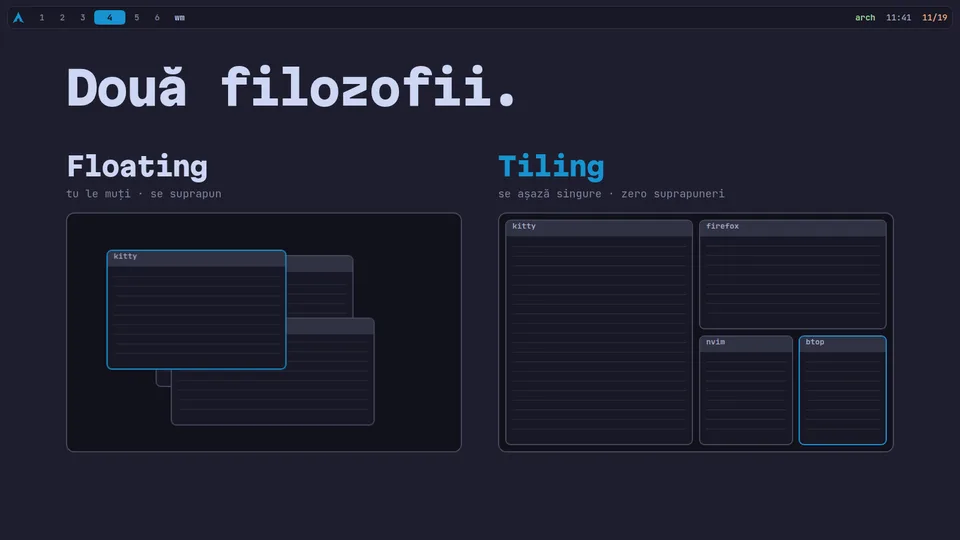
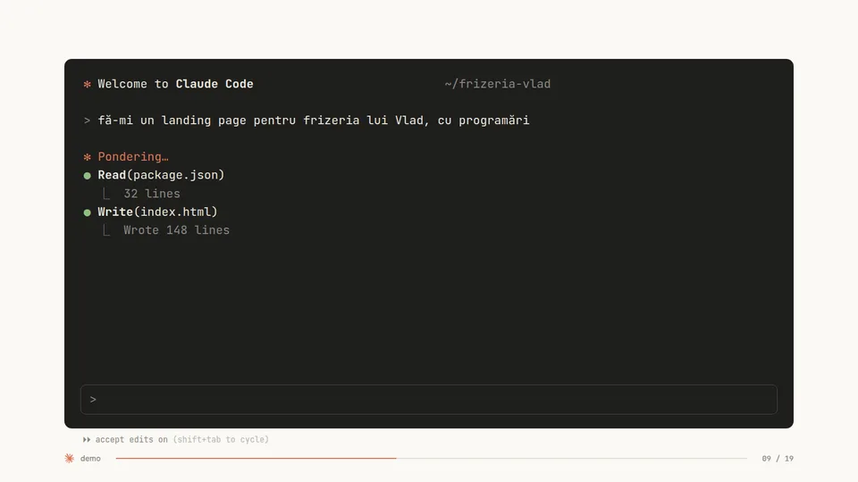
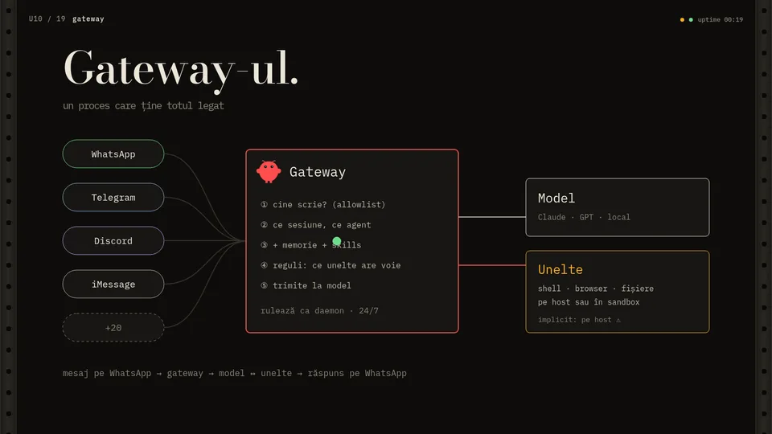

01 / LINUX
Arch, de jos în sus.
kernel, syscall, systemd, daemoni, Wayland, floating vs tiling, rice, pacman.
deschide →

kernel, syscall, systemd, daemoni, Wayland, floating vs tiling, rice, pacman.
deschide →
tokeni, modele și prețuri, Claude Code, skills, MCP, cheia API și cum n-o scapi.
deschide →

server, porturi, VPS, daemon, apoi OpenClaw și Hermes: ce fac, cum se instalează, ce vinzi cu ei.
deschide →
